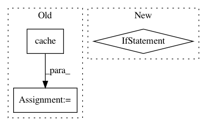

1adf6bb44e1897757464394bcf7502de30278b16,nilearn/_utils/niimg_conversions.py,,_iter_check_niimg,#Any#Any#Any#Any#Any#Any#Any#,38
Before Change
print("...resampled to first nifti!")
from nilearn import image // we avoid a circular import
niimg = cache(image.resample_img, memory, func_memory_level=2,memory_level=memory_level)(niimg,target_affine=affine,target_shape=shape)
if not _check_fov(niimg, affine, shape):
raise ValueError(
"Field of view of image //%d is different from reference "
After Change
memory_level=0, verbose=0):
ref_fov = None
if target_fov is not None and target_fov != "first":
ref_fov = target_fov
for i, niimg in enumerate(niimgs):
try:
niimg = check_niimg(
niimg, ndim=(ndim - 1 if ndim is not None else None),
In pattern: SUPERPATTERN
Frequency: 3
Non-data size: 3
Instances
Project Name: nilearn/nilearn
Commit Name: 1adf6bb44e1897757464394bcf7502de30278b16
Time: 2015-04-20
Author: abraham.alexandre@gmail.com
File Name: nilearn/_utils/niimg_conversions.py
Class Name:
Method Name: _iter_check_niimg
Project Name: nilearn/nilearn
Commit Name: c813b290c4e2f8938ae7a201f7f35a80a869a1a0
Time: 2012-10-19
Author: alexandre.abraham@cea.fr
File Name: nisl/decomposition/canica.py
Class Name: CanICA
Method Name: fit
Project Name: Pinafore/qb
Commit Name: 2f74f04253d5a90459401d0f09ea0559d50371a0
Time: 2016-06-25
Author: ski.rodriguez@gmail.com
File Name: util/guess.py
Class Name: GuessList
Method Name: check_recall